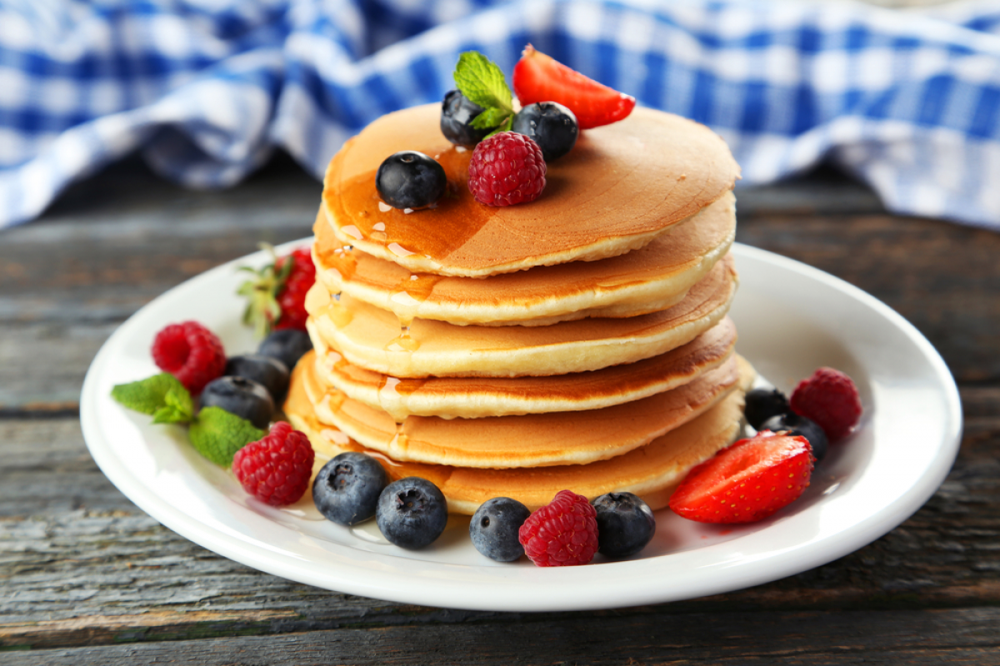

Панкейки

Описание
Панкейк — это мучное изделие плоской формы, выпекаемое на сковороде.
Тесто готовится на основе молока с добавлением крахмала и растопленного сливочного масла.
Панкейки — традиционное блюдо Северной Америки (США и Канады), которое подаётся на завтрак.
Также распространено и в других странах, в том числе как блюдо предприятий общественного питания
Ингредиенты
- молоко - 125 мл
- сахар — 1 ст. л
- яйцо куриное — 1 шт
- разрыхлитель — 1 ч. л
- растительное масло — 1 ст. л
- мука пшеничная — 125 г
Шаги
- Яйца, сахар и соль взбить до пены.
- Влить половину молока, взбить, постепенно всыпать половину муки, чтобы не было комков.
Влить оставшееся молоко и так же постепенно досыпать муку.
- Погасить соду, добавить в тесто, вылить масло. Еще раз хорошо все взбить.
Дать тесту постоять, погреть сковороду
- Смазать сковороду маленьким количеством масла только для первого блинчика
- Жарить на среднем огне. Как начнут лопаться пузырики, перевернуть. Еще несколько секунд и снять